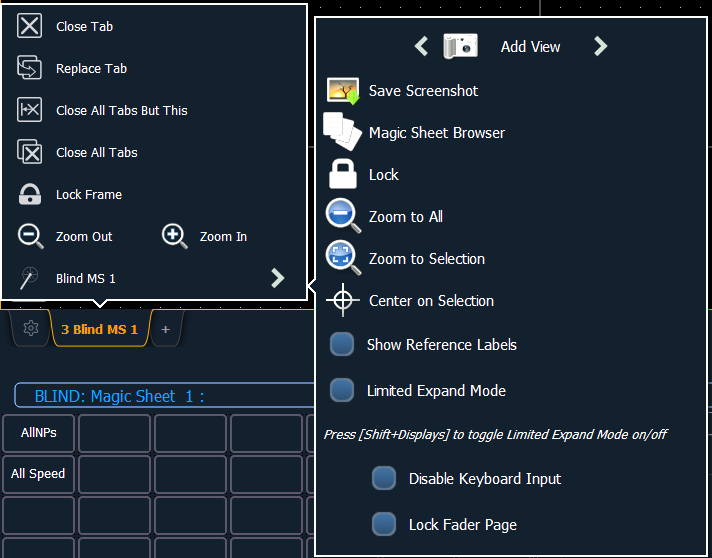

The display tools for Magic Sheets are available by either right clicking or double tapping on the Magic Sheet's tab. The tab will also indicate if the Magic Sheet is in Live or Blind.

Note: You can click and hold or tap and hold on the Magic Sheet's tab to do a zoom to all of the Magic Sheet display.
These tools include:
The following options are only available while in Limited Expand Mode: